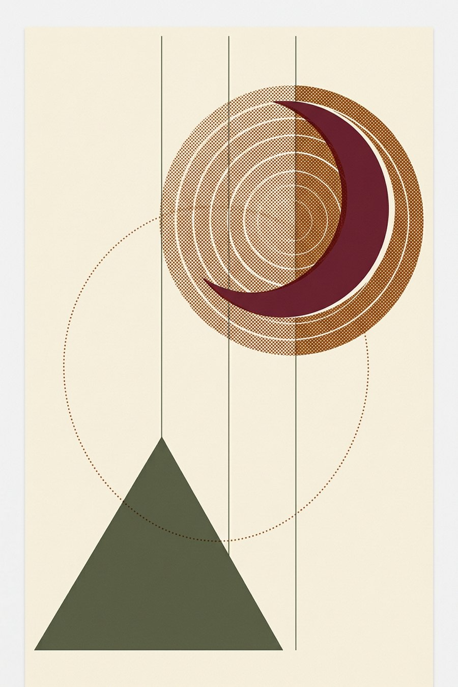
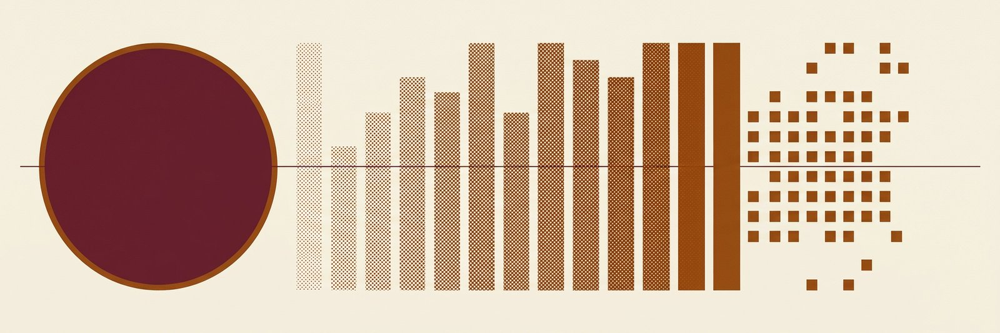
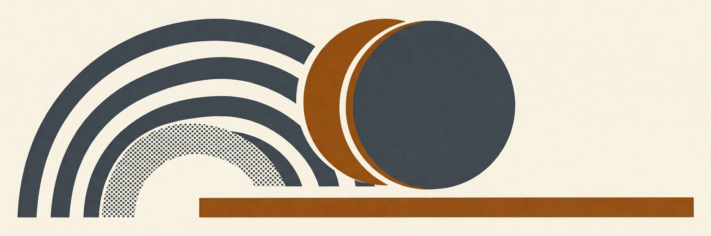
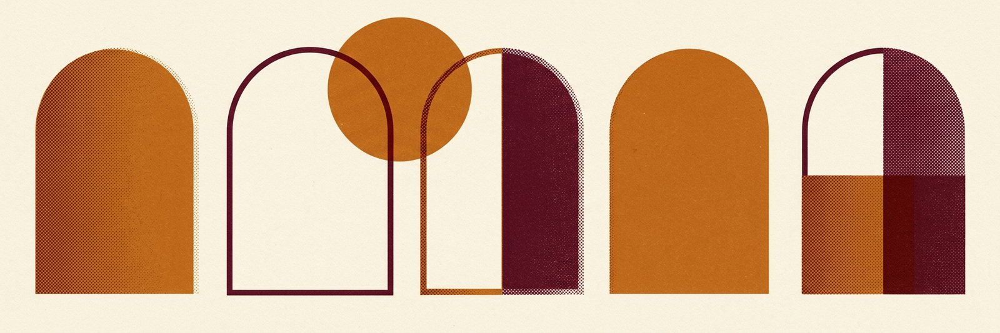
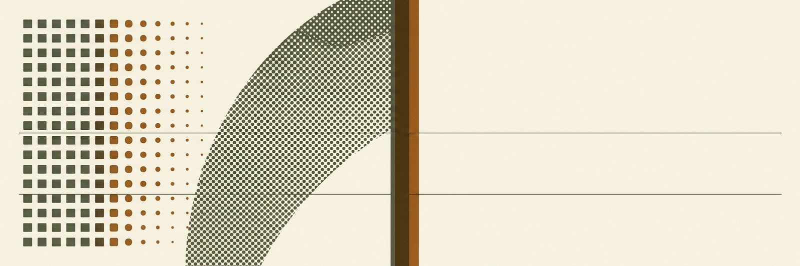
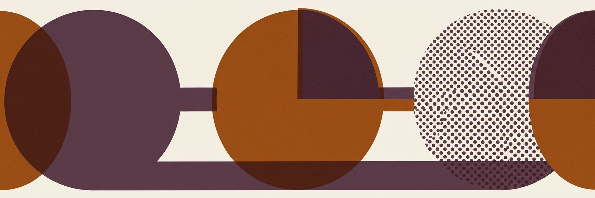
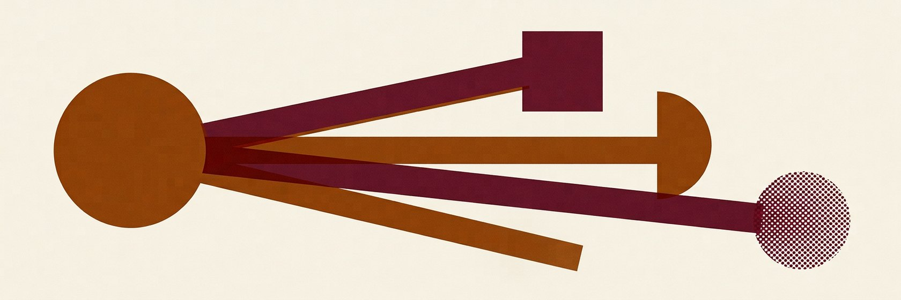
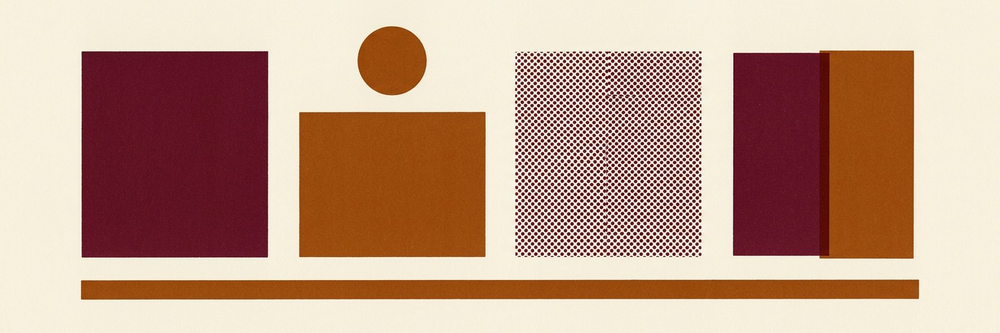

Какая нейросеть под твою задачу?
Постоянно спрашивают: «а чем это сделать?». Собрал то, чем пользуюсь сам — по задачам, без воды. Не склад ссылок, а журнал: с разборами, приёмами и готовыми маршрутами.
Шесть красок издания. Каждая рубрика носит цвет своего семейства — по нему находишь нужное, не читая подписей.

Содержание
разделовПульс каталога
июль 2026Как я это отбираю
правила изданияСначала работа, потом список
Сюда попадает то, чем я реально закрывал задачу. Не то, что громко анонсировали на прошлой неделе.
Лимит пишу честно
Если «бесплатно» означает три картинки в день — так и написано. Сюрприз после регистрации — плохая услуга.
Одна задача — один фаворит
Пятнадцать похожих сервисов в рубрике не помогают выбрать. Держу тех, между кем есть разница по смыслу.
Мёртвое убираю
Закрылся, сломался, обогнали — уходит из указателя, а причина остаётся в хронике. Каталог не кладбище.
С чего начать
популярные рубрики
Указатель находок
Всё, чем пользуюсь сам — по задачам. Ищи по названию или по делу, фильтруй по доступу. У каждой находки честный лимит бесплатного тарифа и дата сверки.
Все находки
Попробуй другое слово или сними фильтр «без VPN».

Claude: от первого запроса до своей студии
Двадцать четыре главы в четырёх уровнях. Реальные боли тех, кто работает в нём каждый день: почему кончаются лимиты, почему он «тупеет» к концу диалога и как заставить его делать картинки и видео.

Двенадцать моделей крупным планом
За что берут, какие параметры реально решают, где обожжёшься и с чем связать. В конце каждого портрета — готовый промпт, который копируется одной кнопкой.

Ремесло
Восемь приёмов, которые работают с любой моделью. Они дают больше, чем смена инструмента: тот же сервис начинает выдавать другой результат.

Связки
Одна модель редко закрывает задачу целиком. Здесь — готовые цепочки: что за чем открыть, чтобы дойти до результата.
Полки
Именованные наборы под разные задачи. Хранятся в браузере, ничего никуда не уходит — но полкой можно поделиться ссылкой.
На полке
0 находок
Карта решений
Каталог отвечает на вопрос «что есть». Эта карта отвечает на вопрос «что взять». Слева условие, справа находка — без промежуточного чтения.

Витрина работ
Шесть примеров с задачей, стеком и граблями. Каждая работа сделана специально для этого выпуска — чужие результаты я не показываю.
Всё ниже — мои файлы, сделанные под этот номер. Ничего не взято из чужих портфолио: показывать чужую работу как свою нечестно, а использовать её без разрешения — ещё и незаконно.
Что сломалось
Сервисы, которые закрылись. Обещания, которые не сбылись. И мои собственные промахи — те, что дошли до читателя.
Как платить из России
Три рабочих пути и одно объяснение, почему карта не проходит даже там, где сайт открывается.
Дело не в блокировке сервиса — сайт открывается, аккаунт создаётся, письмо приходит. Платёж отсекает процессинг: он смотрит на первые шесть цифр карты и по ним видит российский банк. Смена страны в профиле и зарубежный адрес не помогают — проверяется только номер карты. Это касается и Visa, и Mastercard, и МИР.
Агрегатор с оплатой рублями
Платишь российской картой, внутри — сразу несколько моделей. Ничего настраивать не надо, VPN не нужен. Мой основной способ.
Виртуальная карта
Выпускаешь карту с зарубежными первыми цифрами и пополняешь рублями. Автопродление работает, но есть комиссии на каждом шаге.
Карта зарубежного банка
Самый стабильный и самый хлопотный: нужна поездка и местные документы. Окупается, если платишь не только за нейросети.
Хроника
Что убрал, что добавил и где сам ошибся — с датами. Каталог живой: сервисы закрываются, лимиты меняются, обещания не сбываются.